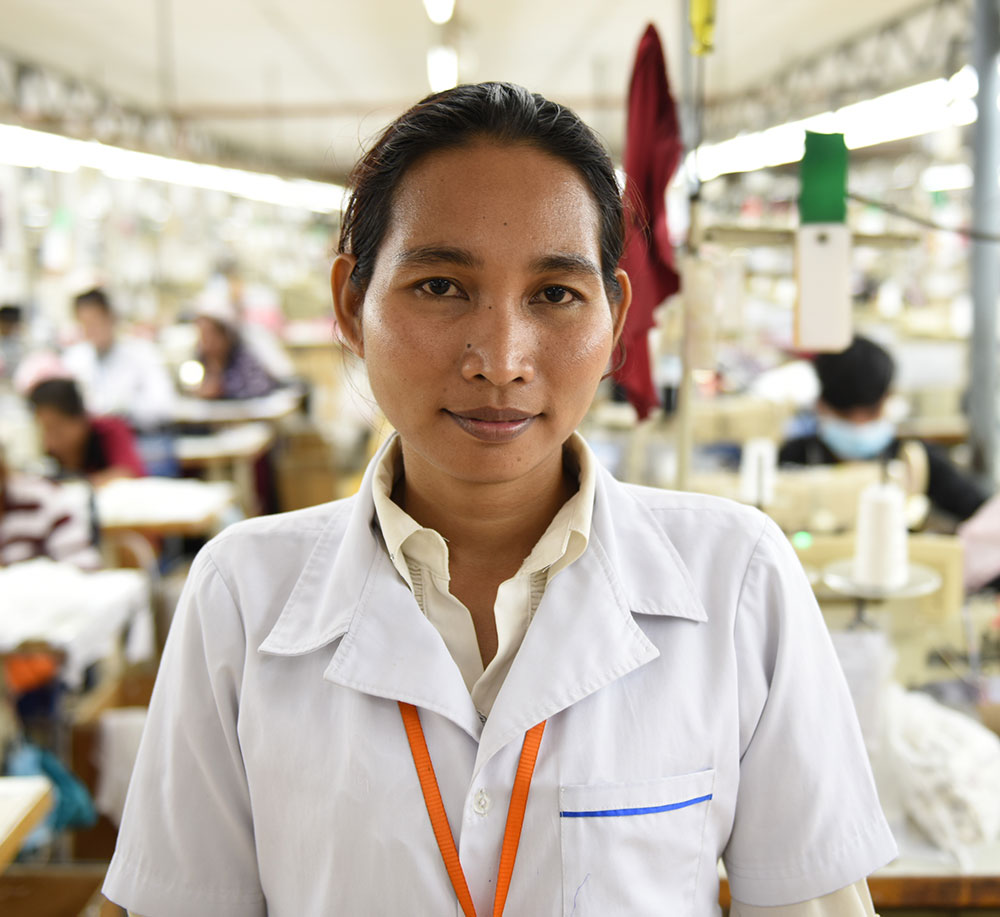
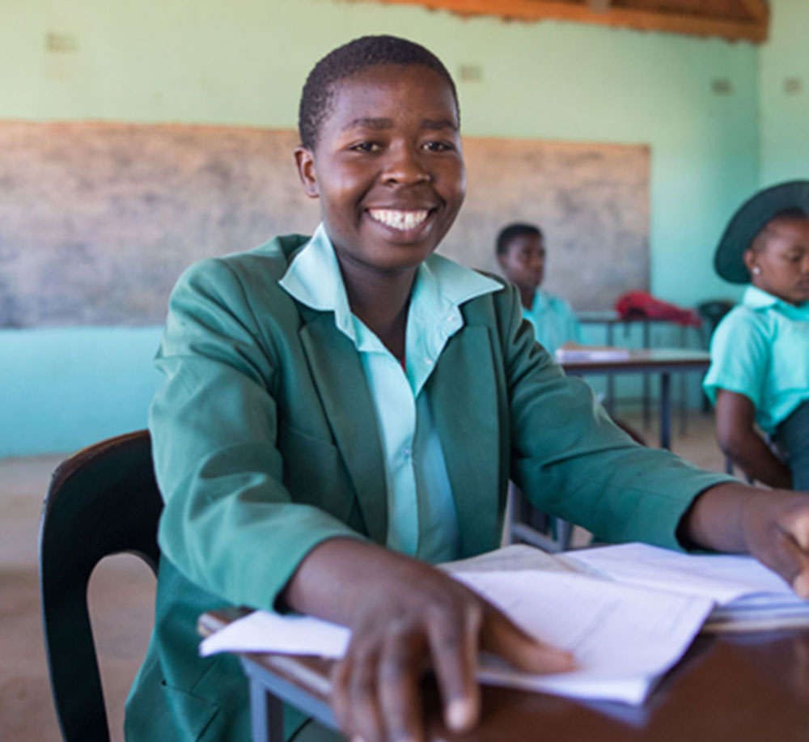

About Us
"We put women and girls at the heart of our work to end worldwide poverty."

Empowering Women
- 60% of the world’s working poor are women
- 90% of countries have at least one law that discriminates against women
- 1 in 5 women will be a victim of rape or attempted rape in her lifetime
Women and girls bear the brunt of poverty. Too often girls miss out on school and women face violence. Many women all over the world don’t have secure, paid jobs, and die needlessly during pregnancy and childbirth. Forced early marriages, general social attitudes and gender norms make women vulnerable to injustice.
Women everywhere bear an unfair share of household work. Women also don’t have access to important skills that could help them play a role in freeing communities from poverty.
We want to create a world more equal for women and girls. Your support will go to countries where women don’t have equal opportunities.

Hunger and Health
- Around 795 million people do not have enough to eat to lead healthy active lives – that’s about 1 in 9 people
- 2.6 million babies die every year in their first month of life and a similar number are stillborn
Families in poor and rural communities often don’t have clean water, basic toilets or essential medicines and healthcare. Without the tools and knowledge to help prevent the spread of disease, many adults and especially children suffer and die from avoidable illnesses.
Not having enough food keeps people from experiencing a healthy, productive life. Millions of children under five die each year because of malnutrition. Inefficient farming practices and a changing climate mean food supplies are irregular. Poor families often lack the variety of nutrients they need for healthy development. And poor communities facing natural disasters including droughts and floods need emergency support to prevent malnutrition.

Education
- There are 59.3 million primary school-aged children out-of-school – more than half of them are girls
- Over the past four decades, the global increase in women’s education has prevented more than 4 million child deaths